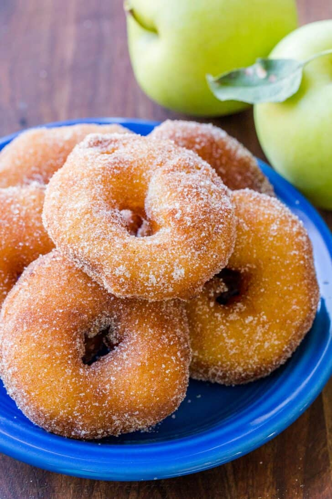

Apple Fritters

Apple Fritters Recipes
Warm Apple Fritters are a treat during apple season and they are ready in just 30 minutes. The batter has a
secret
ingredient the produces a fluffy coating that’s crisp on the outside and soft inside. Imagine Glazed Donuts
stuffed
with an apple ring.
Ingredients
Apple Fritters ingredients:
- 1 cup all-purpose flour
- 2 Tbsp granulated sugar
- 1 1/2 tsp baking powder
- 1/4 tsp salt
- 2/3 cup milk, 1% or whole milk
- 1 egg yolk
- 1 Tbsp butter, melted (unsalted or salted)
- 2 egg whites
- 4 medium apples, peeled, cored and sliced into 1/4” rings
- 3 Tbsp lemon juice, juice of 1 medium lemon
- 2 to 3 inches Canola oil , or vegetable oil for frying
Instructions
- In a medium bowl, whisk together the dry ingredients: flour, sugar, baking powder and salt.
- In a second large bowl, whisk together milk, egg yolk and melted butter. Gradually add the flour mixture into your wet ingredients and whisk until smooth
- Pour 2 to 3 inches of oil into a large pot or dutch oven and heat over medium/high heat to 375˚F on a thermometer.
- Peel core and slice apples into 1/4”-thick rings and place into a shallow dish. Squeeze lemon juice over apple slices and use your hands to gently toss apple rings to coat with lemon juice (this will prevent browning).
- In a medium bowl, beat 2 egg whites with an electric hand mixer, egg beaters or a whisk until stiff peaks form, but whites are not dry. If you over-beat, it will be difficult to blend. Use a spatula to gently fold whites into the batter until fully incorporated.
- Remove apple slices one at a time from the lemon juice, allowing any excess juice to drip back into the bowl then dip both sides of the apple in batter to fully coat, allowing excess batter to drip back into the bowl.
- Fry in hot oil batches in a single layer (5 or 6 at a time to avoid crowding), frying for about 2 minutes per side or until browned, flipping once. Keep oil above 350˚F while frying
- Remove with a strainer and transfer fritters to a paper towel-lined plate to absorb excess oil. To serve, dust with powdered sugar or dip both sides in cinnamon sugar.*
Note: *To make cinnamon sugar: whisk together 1/2 cup sugar and 1/2 tsp cinnamon.
Back to Home